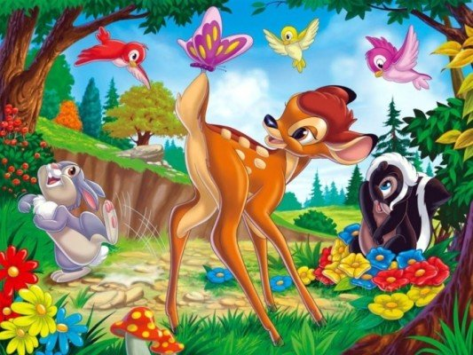
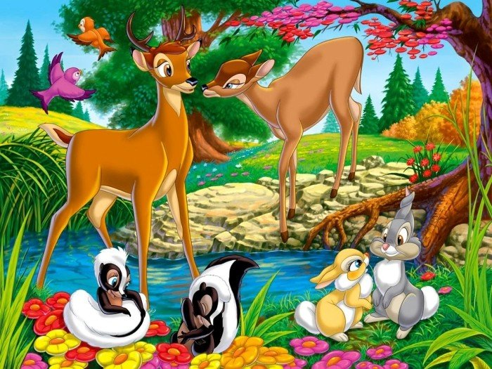
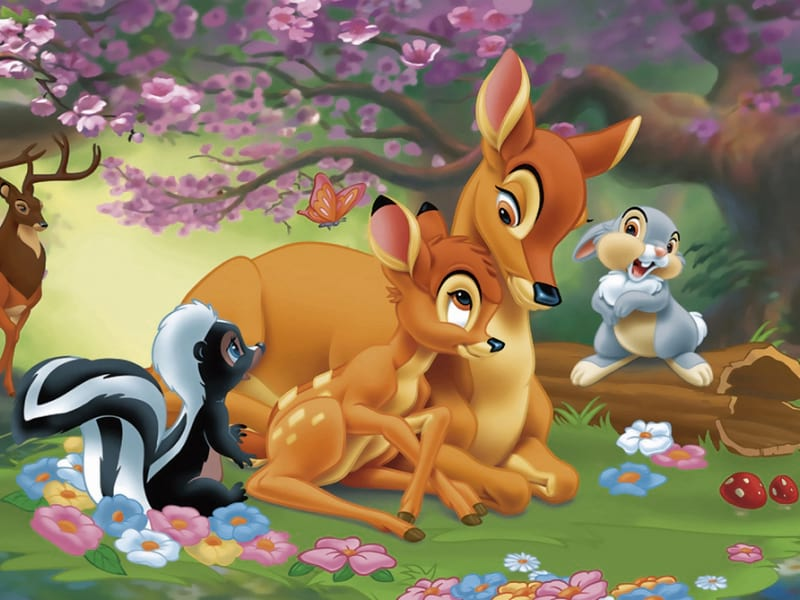
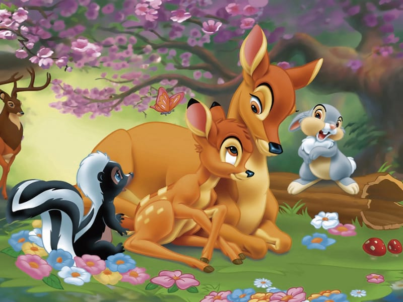

Мультфільм розпочинається з народження нового Принца лісу — оленятка Бембі. Разом зі своїми першими друзями — Топотуном і його сестрами — він вчиться ходити, говорити і знайомиться з іншими мешканцями лісу. Несподіваній для нього стає зустріч з Феліно — маленькою оленихою, яка вважає спілкування з Бембі дуже цікавим і веселим. Бембі, проте, зовсім не розділяє радості Фелін. Намагаючись наздогнати настирливу знайому, Бембі зустрічається зі своїм батьком — Великим Князем лісу — найповажнішим оленем у всьому лісі.

 
